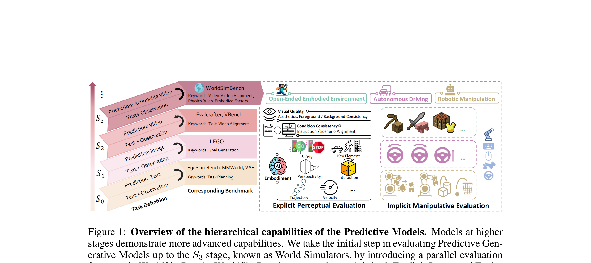

WorldSimBench: Towards Video Generation Models as World Simulators
Qin 等 · 2024 技术报告 · arXiv:2410.18072 · Zotero SU278RUC
WorldSimBench 首次把“生成视频能否支持控制”放进核心指标：除了显式感知质量，还用 Implicit Manipulative Evaluation 检查生成的情境视频能否被翻译成正确操纵信号。
§1 Introduction：怎样判断生成视频已经具有 simulator 的实际用途
视频模型可能生成视觉上可信的未来，却不一定保留场景属性、三维关系或与动作相符的变化。普通视频指标无法回答：生成结果能否给 embodied agent 提供有效预测？WorldSimBench 因此把能力分层，并提出视觉质量与可操作性并行的评测。
Explicit Perceptual Evaluation 用人工反馈和 Human Preference Evaluator 检查不同 embodied 场景中的 fidelity、物理与逻辑属性；Implicit Manipulative Evaluation 则把生成视频转换为可用于下游任务的表示或指导，以任务表现间接测 actionability。前者问“人看起来像不像”，后者问“智能体用起来有没有信息”。
展开原文 · 核心框架
“dual evaluation framework”
§2 Related Work：预测模型能力层级与 embodied evaluation
LLM/MLLM agent benchmark 多用文本答案或任务成功率，视频 benchmark 多用人类偏好和视觉指标；两者都难单独评价 video world simulator。WorldSimBench 将生成模型能力从语义预测推进到场景级、物理一致且与行动相容的阶段，并用双路径覆盖外观与用途。
它与 VideoPhy/WorldModelBench 的差别在于更强调 embodied scene 和下游可译性；与真实机器人 benchmark 的差别是 implicit evaluation 仍通过代理任务度量，不一定涉及真实动力学闭环。它是“world simulator 候选”的筛查器，而非最终安全认证。
§3 从好看视频到可用 simulator
§4 层级能力与评测路径

1. 给定情境与控制条件
生成模型预测下一段世界视频。
输入是什么：评测或任务明确写出的起始场景、控制条件和目标要求。它规定模型从哪里开始、允许接收哪些信息、最后应该发生什么。
这一步究竟做什么：本步骤执行“给定情境与控制条件”。具体来说，生成模型预测下一段世界视频。 模型从相同起点产生候选未来，后续模块再检查这些未来是否符合条件、物理规律或动作需要。
输出到哪里：一套固定且可复现的输入条件，后续所有模型都必须在这套条件下生成或行动。这个结果会交给下一步“直接看视频”继续处理。
为什么不能省略：机器人动作会改变下一次观测；只有执行后重新读取现实，才能发现预测误差并阻止错误连续累积。
2. 直接看视频
测质量、对象和时间一致。
输入是什么：来自上一步“给定情境与控制条件”的产物：一套固定且可复现的输入条件，后续所有模型都必须在这套条件下生成或行动。本步骤还会按论文设置读取当前条件、时间步或训练信号。
这一步究竟做什么：本步骤执行“直接看视频”。具体来说，测质量、对象和时间一致。 这里处理的只是整条链路中的一个接口：把上一步的结果整理成下一步能够正确读取和继续计算的形式。
输出到哪里：经过本步骤处理、含义更明确的中间结果。这个结果会交给下一步“构造动作相关任务”继续处理。
为什么不能省略：它承担上下两步之间的接口；缺少它，前一步产生的信息无法以正确格式或正确含义传到下一步。
3. 构造动作相关任务
未来必须包含足够操作线索。
输入是什么：来自上一步“直接看视频”的产物：经过本步骤处理、含义更明确的中间结果。本步骤还会按论文设置读取当前条件、时间步或训练信号。
这一步究竟做什么：本步骤执行“构造动作相关任务”。具体来说，未来必须包含足够操作线索。 这个动作会真正改变环境，所以系统还要读取执行后的新观测，检查模型预期与现实之间的差距。
输出到哪里：经过本步骤处理、含义更明确的中间结果。这个结果会交给下一步“从视频恢复控制”继续处理。
为什么不能省略：它承担上下两步之间的接口；缺少它，前一步产生的信息无法以正确格式或正确含义传到下一步。
4. 从视频恢复控制
用下游动作误差评估生成的实用性。
输入是什么：来自上一步“构造动作相关任务”的产物：经过本步骤处理、含义更明确的中间结果。本步骤还会按论文设置读取当前条件、时间步或训练信号。
这一步究竟做什么：本步骤执行“从视频恢复控制”。具体来说，用下游动作误差评估生成的实用性。 它把原本模糊的‘看起来对不对’拆成可重复计算或人工核对的判断，从而让不同模型能在同一标准下比较。
输出到哪里：可发送给机器人控制器的动作，以及执行后重新观测到的真实状态。这是图中这条链路的最终产物，随后会进入真实执行、模型更新或指标评测。
为什么不能省略：机器人动作会改变下一次观测；只有执行后重新读取现实，才能发现预测误差并阻止错误连续累积。
§5 Implicit Manipulative Evaluation
若两段视频视觉都合理，但只有一段能让 IDM/控制器恢复正确动作，则后一段更像 world simulator。这把“想象—动作因果一致”变成可量化问题。
§6 对 WAM 的直接意义
报告显式视频质量 + 物理常识 + IDM 动作可译性 + 最终 rollout 成功率；四者缺一都会留下盲区。
§7 局限
隐式分数同时受生成模型与 IDM 能力影响：IDM 太弱会低估好视频，IDM 过拟合会高估熟悉模式。应使用多个动作解码器或人类校准。
§8 使用与复现：下游任务提升是否真的来自生成世界
最小可信使用清单
- 公开三个场景、20 个维度及聚合权重。
- 固定每个模型的 prompt、采样数、生成长度和后处理。
- 下游任务设置相同，只替换生成视频或其表示。
- 加入真实视频、打乱视频、静态首帧和 oracle future 对照。
- 把 implicit 增益与真实控制成功率关联，而非直接等同。
WorldSimBench 的进步是把“可用”放进评测；但代理任务是否忠实代表机器人交互，仍是需要单独验证的假设。